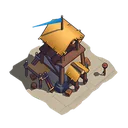
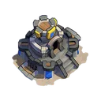

Choose a wave to check its instructions. Set your place manually as the event runs.
City On: online cities only HQ
City waves: reinforce your assigned towns before the hit.
{% include ascii/march.html %}
Set your guard station, check your march capacities, and agree who covers your city. HQ participants should know which queue to recall.
Use every available queue and send all troop types while space remains. Your limit is the sum of your march capacities. If troops cannot all fit, the baseline leaves surplus archers home first, then cavalry if necessary. Arrange incoming cover before emptying your city.
Troop counts alone cannot tell us whether a city will clear a wave. Difficulty, troop tiers, garrison stats and skills matter.
Split your deployable troops evenly across city marches, with the same composition where capacities allow. This does not require equal numbers of infantry, cavalry and archers. Keep the HQ preset separate.
Only cities whose players are online when these waves fire receive an attack. Offline players still send their marches before logging off, and their own cities still get covered for every other wave. Rotate cover only when the alliance has planned the travel time and the return to offline towns.
The availability on this page is what players said they expect. Check the game’s Members tab for current presence and garrison space.
Agree the participants, effective garrison cap and exact shares. Our starting preset is 75% infantry and 25% cavalry. Leaders can change it for their alliance.
After wave 9 or 19 resolves, recall the reserved queue and send its agreed HQ share. Return to city cover after the HQ hit. The planner checks capacity and troop availability; it does not predict survival.
A town has a finite wave points budget. Reinforcers earn their share through kills. More reinforcers change how that pool is split; they do not multiply it. Aim for full clears, then inspect the kill reports before adjusting cover.
The community scoring model is approximate. We do not turn assigned troop counts into a promised score.
Keep the heroes who lead your city in the guard station. Choose reinforcement leads from the skills your alliance needs and check their actual effects in reports. Vikings recommendations should follow Vikings evidence.
If you heal between waves, send those troops back out unless the city needs them to survive. If a city stops receiving attacks, redeploy its reinforcements to a city still taking waves.
Open the hero directoryThe leader link runs it, the sign-up link adds players, and your own link edits your troops. There are no accounts, so keep your link.
It stays while your alliance uses it. Only your Vikings troops and name are sent; the rest of your save stays on this device.